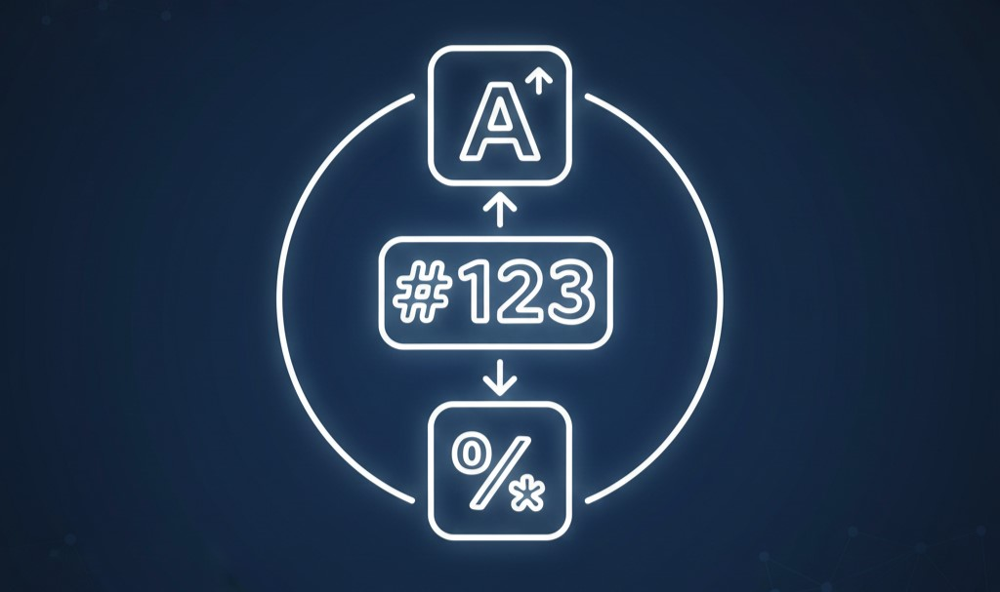
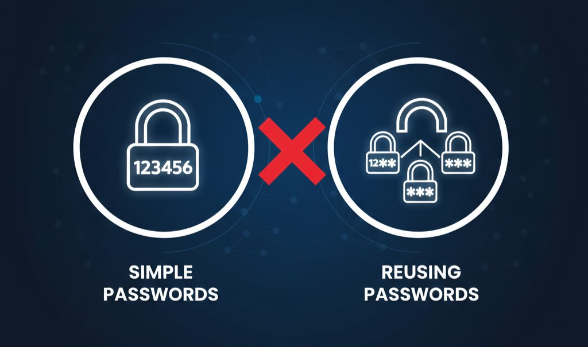
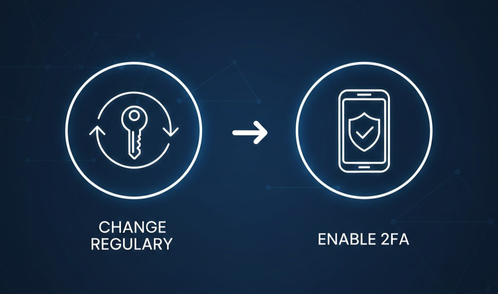

Password Security
Protecting accounts using strong passwords
What is Password Security?

Password Security refers to the practice of protecting online accounts
and digital systems by using strong and confidential passwords.
Passwords act as the first line of defense against unauthorized access.
A secure password prevents hackers from gaining access to personal and
sensitive information.
Password security also involves keeping passwords private and not sharing them
with others.
In the digital world, weak passwords can easily be guessed or cracked.
Proper password security helps protect email, social media, banking and
other online accounts.
Following password security practices is essential for digital safety.
Strong Passwords

Strong Passwords are passwords that are difficult to guess or break.
A strong password usually contains a combination of uppercase letters,
lowercase letters, numbers and special characters.
Longer passwords are generally more secure than short ones.
Strong passwords reduce the risk of hacking and brute-force attacks.
Each online account should have a unique password.
Avoid using personal information such as names, dates of birth or phone numbers.
Using strong passwords greatly improves overall online security.
Common Password Mistakes

Many users make common password mistakes that put their accounts at risk.
Some common mistakes include:
• Using simple passwords: Such as “123456” or “password”.
• Reusing the same password: Using one password for multiple accounts.
• Sharing passwords: Telling passwords to friends or others.
• Saving passwords: Storing passwords on public or shared devices.
These mistakes make it easier for attackers to hack accounts and steal information.
Avoiding these mistakes is important for maintaining password security.
Password Safety Tips

Following Password Safety Tips helps protect online accounts
from unauthorized access.
Users should create strong and unique passwords for every account.
Passwords should be changed regularly, especially after a security breach.
Two-factor authentication (2FA) should be enabled whenever possible.
Users should avoid logging in to accounts on public or unknown computers.
Passwords should never be written down or shared with anyone.
Being careful and responsible with passwords ensures better digital security.